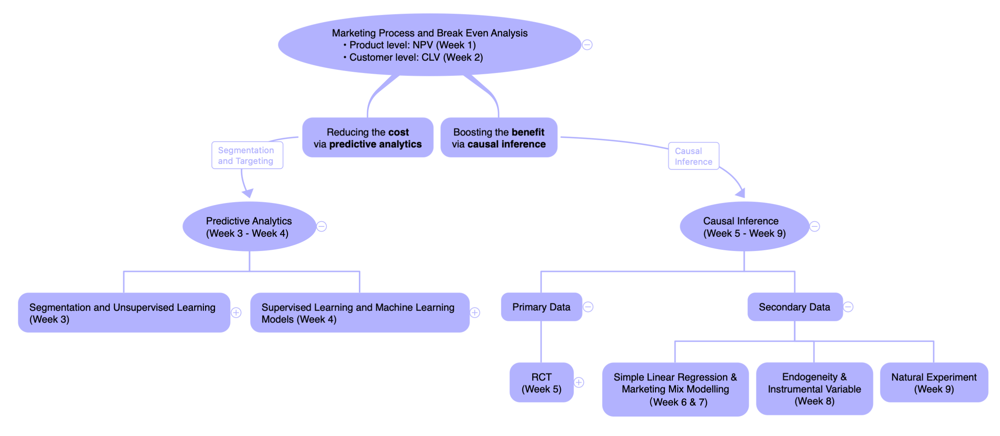
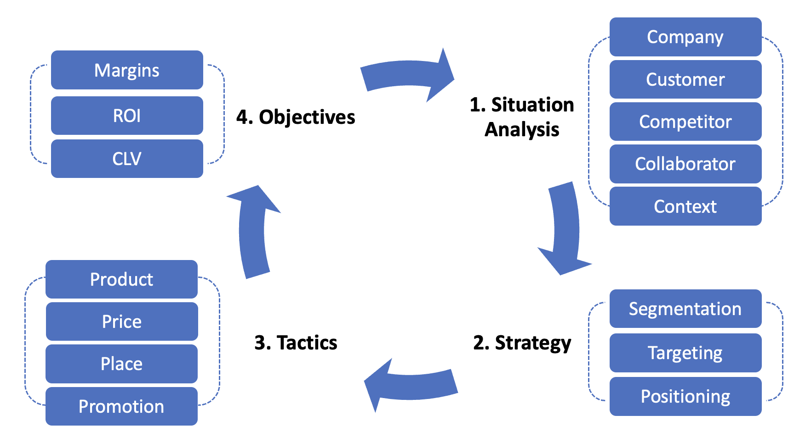
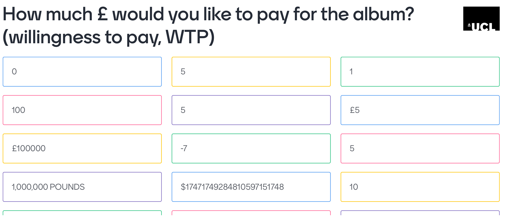
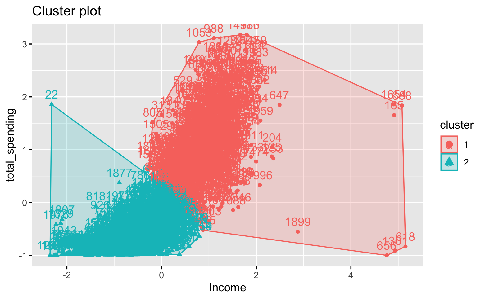
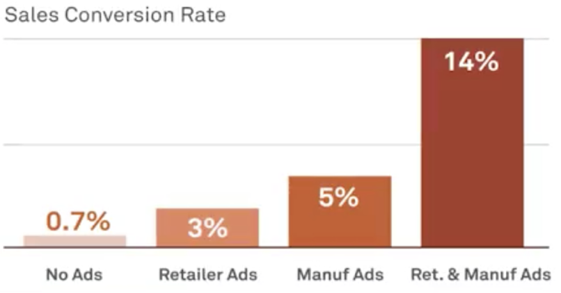
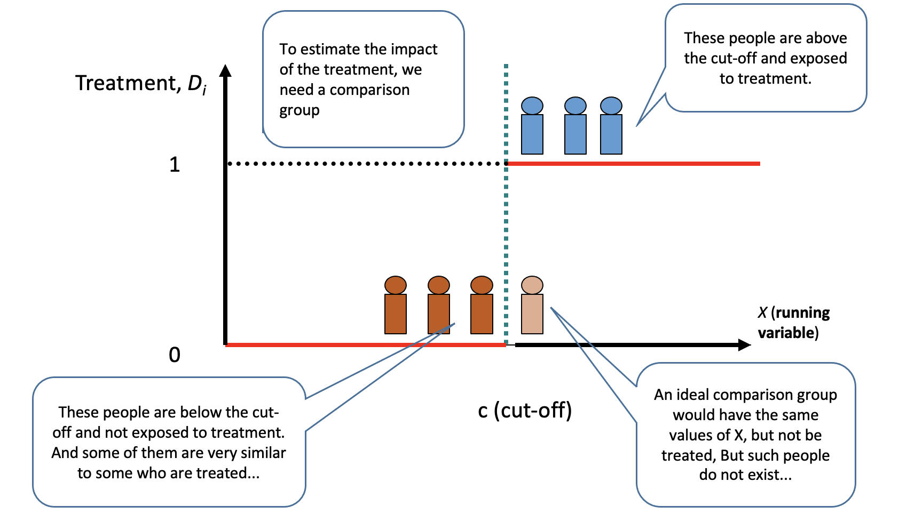
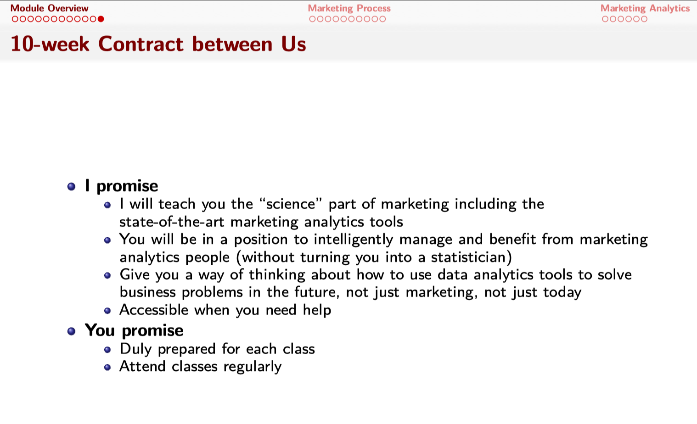
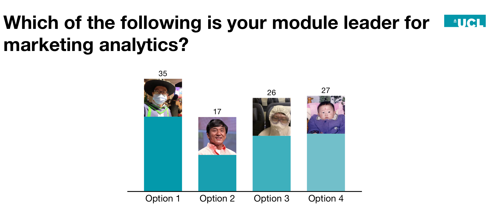

Week 10 Module Wrap-up

1 Week 1: BEA
1.1 Week 1: Marketing Process

- What is marketing
- Situation analysis (5C analysis)
1.2 Week 1: Break-Even Analysis
- Break-even analysis is essential to any business activity
- Break-even quantity (BEQ)
- Net present value (NPV)
- Customer lifetime value (CLV)
- BEA is essentially cost-benefit analysis
2 Week 2: Descriptive Analytics
2.1 Week 2: Data Wrangling with dplyr
- Data manipulation with
dplyr- basic operations:
filter,mutate,select,arrange - group aggregation:
group_by - multi-data joining:
left_join
- basic operations:
- Tesco case study: Preliminary customer analysis using
dplyr
2.2 Week 2: Nice to meet you, I’m Wei, and I’m a musician!


2.3 Week 2: Nice to meet you, I’m Wei, and I’m a Youtuber!

3 Week 3-4: Predictive Analytics

3.1 Week 3: Unsupervised Learning for Customer Segmentation
- Unsupervised learning such as K-means clustering help classify individuals into different groups.
- K-means is usually supplementary to more complicated analyses.

3.2 Week 4: Supervised Learning for Customer Targeting

- Supervised learning models predict outcome \(Y\) based on predictors \(X\)
- linear regression (high interpretability, low accuracy)
- decision tree and random forest (good interpretability, good accuracy)
- deep learning (no interpretability, high accuracy)
- With targeted marketing from supervised learning, we can effectively reduce marketing costs and boost the ROI.
4 Week 5-9: Causal Inference

4.1 Week 5: Rubin Causal Framework and RCTs
- Why causal inference matters?

- We can use RCT to get causal inference
- Randomization removes selection bias and pre-existing differences
- Application of RCTs
4.2 Week 5: Nice to meet You, I’m Wei and I’m from Hogwarts
4.3 Week 6 & 7 : OLS Regression and Marketing Mix Modeling
- Linear regression can give causal inference if and only if all confounding factors have been controlled in the regression.

In reality, this never happens, so linear regression can never give causal effects.
In practice, companies often use linear regression to build marketing mix modeling, in order to set optimal prices for profit maximization (profit is a quadratic function of price).
- Zalora case study
4.4 Week 8: Endogeneity and Instrument Variables
- Endogeneity of simple linear regressions
- Omitted variable bias
- Reverse causality
- [Measurement error]
- An instrument variable can give causal inference. Requirements:
- Exogeneity
- Relevance
- Observable (implicit)
4.5 Week 8: Endogeneity and Instrument Variables
- Explain \(X\) with \(Z\) (regress \(X\) on \(Z\)). The predicted \(X\), \(\hat{X}\), is uncorrelated with the error term \(\epsilon\) in the original regression.
- \(\hat{X}\) is exogenous, because \(Z\) is exogenous
- All endogenous parts are now absorbed/teased out into the error term in the first-stage regression \(\epsilon_{i}\)
\[ X_{i}=Z\eta+\epsilon_{i} \]
- Use the explained part \(\hat{X}\) to explain \(y\), now \(\hat{X}\) is exogenous and can give us causal inference.
\[ y_{i}=\hat{X} \beta+\varepsilon_{i}, \quad \operatorname{cov}\left(\hat{X}_{i}, \varepsilon_{i}\right) = 0 \]
- COVID-19 case study: The causal impact of COVID-19 on Uber Driver Decision
4.6 Week 9: Difference-in-Differences

- A new policy/regulation (GDPR, lockdown, etc.)
- RCTs that are hard to randomize at the individual level (East London and West London)
4.7 Week 9: Regression Discontinuity Design

- “Distinction” honor on students’ future salaries
- Regression discontinuity in time
4.8 One Causal Question, Many Solutions
- If we have historical data on number of restaurants on UberEat in each month, and the total number of orders in each month, can we get the causal effect?
\[ NumOrders_t = \beta_0 + \beta_1 NumRestaurants_t + \epsilon_t \]
- Solutions
- RCT
- Instrumental Variable
- DiD
- RDD
5 Concluding Remarks
5.1 MSIN0094 Contract from Week 1

5.2 10 Weeks Not Enough?
I love new challenges so my door is always open even after the class is over
More learning materials
- Optional reading materials in each week
- I plan to update more R tutorials/data analytics tools on my Youtube channel. It’s never too late to subscribe!
5.3 Lessons for Me
- Impressed with your willingness to learn hard tools and to dig in
- => My colleagues predicted you would chase me out of the classroom for making you learn Marketing, R, and so many complicated models at the same time
- You’ve made me very proud:
It gives me a huge sense of achievement see that you all have made huge progress in your R skills and marketing analytics models!
It feels weird but I’m flattered answer questions from other modules :))
R is the best language!!!!
- I learned something from you too
- superb time management
- hard-working attitude
5.4 Looking into the Future
- The only things you will probably remember in 10 years:
- There used to be a module leader with a big bubble tea belly, who could have been bribed by T4
- but he tries his best to be a good musician, magician, youtuber, standup comedian, and most importantly a (great) lecturer
- There used to be a lame alumnus named Tom, who claims to be Jeff Bezos’ brother-in-law and made us do many assignments.
5.5 Thank You for Being Amazing!!
Thank you very much for your hard work the whole term!
Hope a few years later on a random street in London, you can still know the correct answer to this question!

| Hey Jude | Hey Tom |
|---|---|
Hey [G] Jude don’t make it [D] bad Take a [D7] sad song and make it [G] better Re[C]member to let her into your [G] heart Then you can [D7] start to make it [G] better |
Hey [G] Tom don’t make it [D] bad Take a [D7] T4 Bubble Tea and nail the final [G] assignment Re[C]member to let R into your [G] heart Then you can [D7] start to make Wei [G] prouder |
Hey [G] Jude don’t be a-[D]fraid You were [D7] made to go out and [G] get her The [C] minute you let her under your [G] skin Then you be[D7]gin to make it [G] better [G] |
Hey [G] Tom don’t skip my [D] class I saw you tap your card and leave [D7], making my heart [G] so broken The [C] minute you practice Python [G] in my class Then I realize [D7] it’s time to [G] duel David! |
[G7]And any time you feel the [C] pain hey [Em] Jude re-[Am]frain Don’t [Am7] carry the [D] world u[D7]pon your [G] shoulder [G] [G7]For well you know that it’s a [C] fool who [Em] plays it [Am] cool By [Am7] making his [D] world a [D7] little [G] colder [G] Na na na [G7]na na na na [D7] na na [G] [D7] |
[G7]And any time you have a question [C] hey [Em] Tom come to [Am] Wei Don’t [Am7] carry the [D] world u[D7]pon your [G] shoulder [G] [G7]For well you know that it’s a [C] stats question [Em] no problem [Am] just ask Wei All [Am7] he needs in return [D] is a [D7] bubble [G] tea [G] La La La [G7] R is the best language [D7] Marketing is the best module! [G] [D7] |